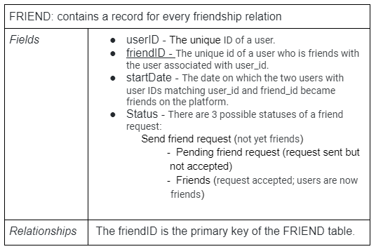

Software Requirements Specifications
Version 1.6
1. Introduction
StudySpace is a web application that provides post-secondary students with access to virtual spaces that foster unique social learning environments. The purpose of this project is to promote a sense of unity and community among students by helping them meet new peers, connect, and study together.
1.1. Purpose
The purpose of this document is to establish the requirements of the project from an implementation perspective. Additionally, this document lays the foundation for all group processes from start to finish by outlining the vision for the project. This document is intended to be used by developers, users, and any other individual who wants to learn the concept of this application and how its features work.
1.2. Scope
StudySpace allows users to search for and join virtual study groups. User benefits include improving academic success, making friends, and gaining a sense of community among peers. The objective of StudySpace is to help students to find groups of like-minded individuals with who they can collaborate — regardless of their physical locations. Through the use of this product, even students who are enrolled in online courses do not miss out on the benefits of group work and peer discussion. StudySpace is distinct from other social media platforms because it is directed towards students and allows them to match with one another based on interests.
1.3. Definitions
| DESK | A Desk is a virtual space wherein students may collaborate privately or publicly. Each desk is temporary; it only exists so long as it is in use. After everyone leaves the desk, it is purged from memory. Each desk has an admin who can set a limit to the number of members and add signifiers such as language, age category, and other factors. Users can sort desks based on their preferences (see: Private Desk), or join a random one (see: Public Desk). |
|||||||
|---|---|---|---|---|---|---|---|---|
| TEAM | The Team refers to students in CP317 W21 Team 2. | |||||||
| STUDY SPACE | Study Space refers to the web application created by the Team for the Initial Audience, Mr. David Brown. | |||||||
| USER MATCH | Users have the option to enter information about themselves, such as various preferences, courses they’re enrolled in, and their study habits. Users who are both members of the same group have the possibility of getting matched. The more preferences, common classes, and similar study habits two group members have, the more likely they are to be matched. When a User Match occurs, the matched users show up in each other’s list of user matches, found on the page of the group they were matched from. |
|||||||
| STUDY GROUP | A group of Students. | |||||||
| STUDENT | A Student is a user enrolled in any Canadian university, who seeks the use of a Desk. | |||||||
| INITIAL AUDIENCE | This product was made for the use of Mr. David Brown, who is the initial User that is not part of the Team to use and test this application. | |||||||
| TARGET AUDIENCE | This product was created to solve areas most commonly experienced by Students. | |||||||
| CHAT | A Chat is a feature where all members of a Group can send text messages to each other. The Chat is viewed through a chatbox on the Group’s page. | |||||||
| PUBLIC DESK | A Desk that any Student can enter and collaborate in. | |||||||
| PRIVATE DESK | A Desk designated for a particular Study Group. Students that are not part of that Study Group may not enter a Private Desk. |
|||||||
| FRIEND | Any two Users can become Friends if one sends a Friend Request and the other accepts it. When two Users are Friends, they can send private chat messages directly to one another. | |||||||
| GROUP NAME | A Group Name is the name of a Group. The Group Name is set by a member of the Group. The Group Name must be unique so that other Users can easily discover the Group via Search. | |||||||
| GROUP | A Group is a collection of two or more users who have connected through StudySpace either by Invitation or a User Match. All members of a Group automatically have access to a Chat upon joining. | |||||||
| INVITATION | An Invitation is an opportunity for a User to join a Group. Any member of a Group can choose to send an Invitation to a User who isn’t already a member. | |||||||
| PAGE | A Page is where Posts are viewed. Each Group can have one or more Pages. | |||||||
| POST | A Post is an object which can include photos and text. Posts are created by Users for all members of a Group to see. Users can make a Post about anything they wish, including buying/selling textbooks, searching for a tutor, asking questions, looking for advice, etc. Users can write a Response to a Post. | |||||||
| PROFILE | A page with personal information about the user. The Profile also provides functions such as managing group memberships and accessing chats. | |||||||
| RESPONSE | A Response is a text message which is linked to a Post. | |||||||
| SEARCH | Search is a function of the app where Users can search and discover Groups by Group Name or Users by Username. | |||||||
| USER | A User is someone who uses the application; likely a Student. | |||||||
| USERNAME | A Username is part of a User’s account information. A Username is the name by which a User is referred to on the app. | |||||||
| UPVOTE/DOWNVOTE | Users can express whether or not they like a post or agree with it by giving it an Upvote or Downvote. Upvoting is equivalent to “liking” the post, and Downvoting is the same as “disliking” the post. | |||||||
1.4. References
- IEEE. IEEE Std 830-1998 IEEE Recommended Practice for Software Requirements Specifications. IEEE Computer Society, 1998
1.5. Overview
The rest of this document contains details about the overall description and specific requirements of the project. Section 2 contains information about the product perspective, product functions, user characteristics, constraints, and dependencies. Section 3 discusses external interfaces, functions, logical database requirements, and software system attributes.
2. Overall Description
2.1. Product Perspective
StudySpace is an independent, self-contained web application. Core features are personalized profiles, groups, chats, and pages in each group. It is a web application with 2 components: user interfaces (front end), and software interfaces (back end).
2.1.1. User Interfaces
- Search bar
StudySpace has a search bar along the top, icons to log in, and a home page with general information that appears upon entering the site. Users can use the search bar to navigate to groups that interest them. - Profile
Once logged in, a user will see a link to their profile. This link remains present as the user navigates the website. On the left side of this page, users can view/edit their preferences and other personal information. On the right, there are two lists: a list of groups the user is a part of, and a list of users they are friends with. By clicking on one of the groups, the user is taken to the group page for that specific group. By clicking on one of the users, the user is taken to the profile page of that user. Since the users are friends, the friends’ profile page will contain a button near the top, labelled “Message”, which the User can click to send a direct chat to that friend. - Create new post
On the group page, there is a button at the top that allows the user to create a new post. Taking up the center of the group page is a list of titles corresponding to group posts that were previously published. The posts are sorted by popularity. - Post
- Full-screen view of the post
Clicking on the title of a post brings the user to a page containing a full-screen view of the post, with the title and the total number of upvotes/downvotes at the top, and the body of the post underneath. On either side of the upvotes/downvotes count are two arrow-shaped buttons; one pointing up and one pointing down. To upvote this post, the user must simply click the upward-pointing arrow. To downvote the post, the user must click the downward-pointing arrow. From this view, the responses to the post are also visible; they are displayed below the body of the original post. In between the body of the post and its responses, there is a textbox and a “Reply” button to the right of it. These features allow the user to submit a response to the post. - Chat box
On the right-hand side of the group page is a chat box where members of the group can send text messages for others members to see. - User pop-up
Any post, response, or chat displays a link that is the username of the user who sent/posted it. For posts, the username is displayed at the top next to the title. For responses and chat messages, the username of the sender is displayed directly above the body of the message. Clicking on the username brings the user to the profile of the user who sent/posted the item. Users can view the preferences and personal information of another user via their profile. While viewing another user’s profile, a user also has the option to request to be their friend via a button in the top-right corner labelled “Send Friend Request."
- Full-screen view of the post
- User match bar
Along the left side of any group page is a list of user matches. User matches are based on the number of preferences two users have in common. Clicking on an entry in this list will bring the user to the profile of the matched user/suggested friend’s page where they can send a friend request if they would like.
2.1.2. Software Interfaces
On the backend, clicking on groups, profiles, or posts sends a request to the database containing all information required by the site. The database must return said required information.
The chat function is also handled by the backend.
2.2. Product Functions
Users can create a group with a desired set of members or a specific topic. New groups may not share a name with existing groups. Users can create posts, comment on posts, chat, log in, and send friend requests to other users.
Group - Signed In Users
Posts are visible to everyone. Users who have not joined the group may still view the group’s posts. Thus, any user can vote and comment on any posts. Any user could also make a post in the group. _
Group - Users Who Are Not Signed In
Posts are visible to everyone. Users who are not signed in can only view the posts. They cannot comment or vote.
Voting and Commenting On A Post
All users, including the post’s author, can upvote or downvote only once. All signed-in users that are a part of the group can vote on posts and make comment(s) in said group.
2.3. User Characteristics
Post-secondary students are the intended users of this product. As such, it is assumed that the user is educated and has experience using a web browser and navigating websites. It is helpful -but not necessary- for the user to have experience with common social media platforms, such as Reddit, Instagram, or Twitter. This experience should aid the user in learning how some features of StudySpace work, such as chat, due to the similarities to other social media.
2.4. Constraints
A large number of users must be able to access the website at once. To ensure the website is reliable, smooth, and feels responsive to the user, chat logs should update within a second whenever a user sends a chat.
2.5. Assumptions and Dependencies
It is assumed that users have a functioning, web-capable desktop computer with a browser installed. Users are expected to have an internet connection for the entire duration of their session. StudySpace should be compatible with any desktop operating system.
3. Specific Requirements
3.1. External Interface
- Posts
- Beside each post, there is an “upvote” or “downvote” icon.
- Upvoting a post increases the total number of upvotes/downvotes by 1, and downvoting decreases the total by 1.
- Any user, including the author of the post, can only upvote or downvote a post once. The total number of upvotes/downvotes can be less than 0 if the number of downvotes exceeds the number of upvotes.
- Only loading in a small amount of posts initially. More posts will load as the user scrolls up.
- If no posts have been made to a group, a message is displayed which says, “There are no posts here.”
- When creating a post, there are requirements that must be met before it can be published. All posts need a title and at least one character of body text.
3.2. Functions
- Creating, editing, deleting posts
- Once a user has created a post, they can edit or delete the post by accessing it via the group page where it is posted.
- Searching
- Any additional spaces or misspelled words in the search bar must be understood. For example “CP31 7 Wilfred” must show the intended results of “Cp317 Wilfrid”.
- Implemented by a Full-Text-Search in the relational database which is part of the backend.
- User sign-in
- When users sign in, the email form must be in proper email format (eg; having “@” in their email address”).
- Passwords must contain at least 8 characters, one symbol, and one number.
- Users stay logged in until they sign out.
3.3. Logical Database Requirements


3.4. Software System Attributes
3.4.1. Security
Any access to the StudySpace backend needs to be verified to ensure that only authorized administrators/moderators have access. Authorization involves entering a valid username and password to an account with administrator privileges. When an administrator or moderator logs into the system, they are granted permissions to edit, create, and delete content.
3.4.2. Portability
StudySpace must be accessible on any desktop that is web-capable and has a browser. Therefore, StudySpace must be compatible with any operating system, including Windows, Mac OS, Linux, iOS, and Android. The product must also be compatible with any browser, including Chrome, Firefox, Internet Explorer, Edge, and Safari.
4. Version History
Version 1.0 - 19/01/2021
Document created by
- Arvin Benipal
- Brian Carvalho
- David Rosien
- Mackenzie Van Zanden
- Matth Francis
- Muhammad Hashir
- Shyam Dave
- Zeeshan Jafri
Version 1.1 - 20/01/2021
Ported document to markdown, cleaned, and formatted some of the language.
- Rohan Uddin
Version 1.2 - 25/01/2021
Adjusted document upon SQA suggestions
- Janelle Tait
Thanks to SQA by
- Dayton Talarico
Version 1.3 - 27/01/2021
Document reformatted and expanded to follow IEEE standards
- Janelle Tait
- Mackenzie Van Zanden
- Matt Francis
- Ann Baldonasa
Version 1.4 - 28/01/2021
Adjusted document upon SQA suggestions
- Janelle Tait
Thanks to SQA by
- Dayton Talarico
Version 1.5 - 30/01/2021
Ported document to Markdown
- Rohan Uddin
Version 1.6 - 07/04/2021
Performed SQA to check for consistency with other documents and grammar checks
- Ann Baldonasa
Updated document based on David Brown’s comments as well as consistency with other documents
- Dayton Talarico
- Janelle Tait
Removed Public/Private Groups as we are no longer including this feature
- Dayton Talarico
Removed layouts section from specific requirements
- Janelle Tait
Removed Voice Chat and Tutors as we are no longer including these features
- Janelle Tait
Updated Section 3.3 to match the Design document
- Dayton Talarico
Removed mentioning of mobile device compatibility
- Janelle Tait
Reformatted and converted to HTML
- Ann Baldonasa